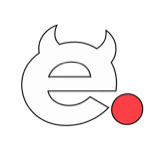

Platform Engineering
Kubernetes platforms, GitOps, developer tooling, and paved roads that help teams ship independently.

e-dot.uk Start a projectAvailable for select projects
Independent SRE and platform engineering consultancy helping teams build reliable systems, scalable platforms, and better developer experiences.
What I do
Focused support for teams running critical systems—without layers of account management or consultancy overhead.
Kubernetes platforms, GitOps, developer tooling, and paved roads that help teams ship independently.
Production reliability, observability, incident readiness, service levels, and disaster recovery.
AWS and GCP architecture, Kubernetes migrations, Terraform, and infrastructure automation.
Platform hardening, IAM, PCI readiness, rightsizing, and practical cloud cost optimisation.
Selected impact
Platform engineering grounded in reliability, developer enablement, security, and sustainable cloud economics.
Migrated 400+ applications from ECS to EKS, consolidated orchestration onto Airflow and Argo Workflows, and led company-wide disaster recovery testing.
Re-architected a core C# platform from EC2 to production GKE, cut build times from 25 to 7–9 minutes, and maintained zero cluster- or configuration-related downtime.
Designed a highly available AWS platform from scratch, with modular Terraform, isolated environments, automated delivery, and security guardrails built in.
Behind e-dot.uk
e-dot.uk is an independent, London-based SRE and Platform Engineering consultancy with 10+ years of infrastructure experience.
I work directly with engineering teams on production platforms, Kubernetes, cloud infrastructure, and reliability—from architecture through implementation and operation.